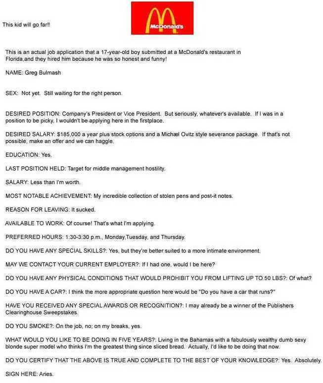
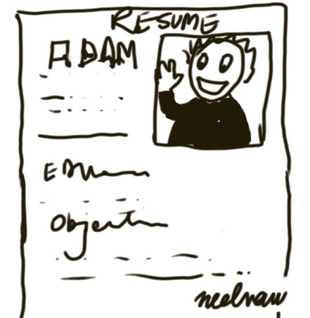
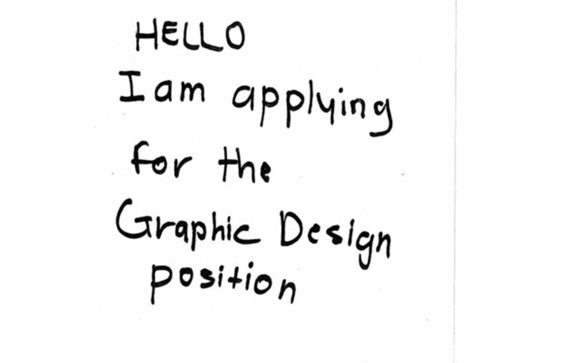

La criba de currículums sigue siendo la parte que más tiempo consume del reclutamiento: se estima que revisar CV puede llevar hasta 23 horas por una sola contratación. La selección de currículums es el proceso de determinar si un candidato está cualificado para un puesto a partir de su formación, su experiencia y el resto de información que recoge su CV. Es, por tanto, una forma de emparejar los requisitos de un puesto con la cualificación de un candidato. El objetivo de cribar currículums es decidir si hacer avanzar a un candidato —normalmente a una entrevista— o descartarlo. Las entrevistas presenciales pueden ser largas y costosas de realizar, así que conviene empezar reduciendo la lista de candidatos. En este artículo te damos algunos consejos para una criba de CV exitosa.
1. Planifica tu proceso de selección de CV
Decide un plan de acción y cíñete a él. ¿Cuántos CV has recibido? ¿A cuántas personas quieres entrevistar? ¿A cuántas vas a contratar? ¿De cuánto tiempo dispones?
2. MIRA el currículum
Me gusta empezar MIRANDO el CV: su formato, estructura, maquetación, gramática y extensión. Son los pequeños detalles los que dicen mucho, y el CV es muy revelador. Un candidato ideal no entrega un currículum descuidado. No quieres a alguien que no presta atención al detalle, que no se esfuerza. Si la persona no ha dedicado tiempo y esmero a preparar su CV, ¿cómo será el resto de su trabajo?
Las faltas de ortografía y gramática, una mala alineación y un formato pobre son señales de candidatos apresurados y con poca atención al detalle, lo que cuestiona la calidad de su trabajo.
Unas malas descripciones de las tareas y la información irrelevante muestran falta de reflexión y de capacidad para centrarse en lo importante, lo que cuestiona su toma de decisiones y su pensamiento estratégico. Los CV largos en general delan a un comunicador prolijo, lo que cuestiona sus habilidades comunicativas y su eficacia en reuniones. Un currículum descuidado te dice que el candidato no es trabajador y no se esfuerza ni en preparar un CV. Un CV mal formateado te dice que la informática no es su fuerte. Así que recuerda mirar bien el CV, porque aporta mucha información no verbal.

3. Elimina los CV que no cumplen tus requisitos mínimos
Empieza usando como guía los requisitos del puesto que deberías haber definido previamente, para determinar los criterios de tu revisión. Por ejemplo: la experiencia o formación mínima que aceptarás, o la capacidad de hablar otros idiomas.

4. Lee entre líneas
Por último, recuerda que al revisar el CV de un candidato es importante fijarse no solo en la información que aporta, sino también en lo que puede implicar. Por ejemplo, el tamaño de las empresas en las que ha trabajado antes. Si alguien ha trabajado exclusivamente en empresas de 10 a 50 personas, quizá esté acostumbrado a un enfoque más práctico y a desempeñar muchos roles distintos. Esto difiere de quien ha trabajado sobre todo en multinacionales de 10.000 a 20.000 empleados, donde hay más foco en la delegación, la estrategia y la comunicación. O las promociones internas visibles en el CV, que probablemente impliquen que el candidato es bueno y un elemento clave a tener en cuenta.
¿Listo para cribar algunos currículums? Encontrarás tu nueva tarea en nuestra aula online.